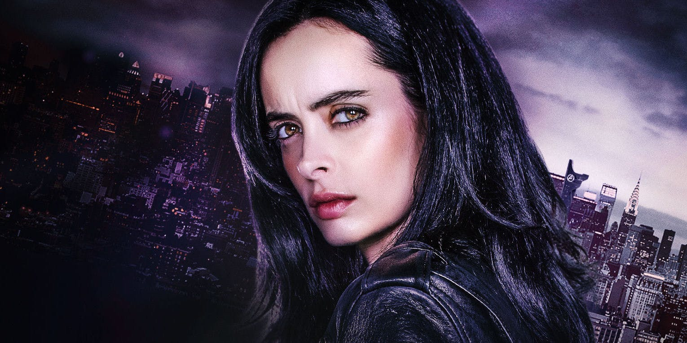

Jessica Jones
Jessica Jones foi lançada logo após Demolidor, em 2015, e foi uma verdadeira montanha russa de emoções. A personagem da atriz Krysten Ritter foi até o limite após o seriado retratar como que ela ganhou seus poderes, após um acidente de carro que matou seus pais. Em 13 episódios, o público explorou as relações da vida de Jessica, incluindo os laços fraternais com Patsy Walker, o investigativo trabalho sujo que faz para a advogada Jeri Hogarth (que também aparecerá em Os Defensores) e seu escritório e sua camaradagem com Malcolm, seu vizinho drogado.
O coração de todo mal que afeta Jessica é o maníaco Kilgrave (também conhecido como Homem Púrpura), cujos poderes para controlar mentes criaram um dos vilões mais sádicos de todo o Universo Cinematográfico da Marvel (UCM). Ele a utilizou como brinquedo sexual e objeto, e após Jessica escapar, ele tentou manipular qualquer pessoa relacionada a sua vida para fazer da heroína sua propriedade novamente. Jessica aprendeu muito sobre si mesma, desbravando seus desejos egoístas e passado trágico para superar sua prisão mental e quebrar o pescoço de Kilgrave no processo.